Córtex Estudos · 4º Semestre · Anato Pato II · Aula 08
Aneurismas
Uma aula curta e muito clínica: o que é um aneurisma (e por que a culpada é a camada média), como ele se apresenta (quase sempre pelo efeito compressivo), as formas sacular, fusiforme, dissecante e o pseudoaneurisma das punções e fraturas, os fatores que destroem a parede (mecânicos, inflamatórios, proteolíticos e genéticos), o aneurisma aterosclerótico — a causa mais comum — e as consequências: trombo, embolia, ruptura, choque e colonização por microrganismos.
1 · Conceito: quando a camada de resistência cede
Aneurisma é uma dilatação vascular (ou cardíaca) causada pela perda de resistência da parede. O ponto central da aula: quem está alterada é a camada média — a camada de resistência, feita de músculo liso + tecido conjuntivo. Se a média está dilacerada, a capacidade de suportar a pressão "é basicamente nula".
A sequência do slide
- 1Alteração estrutural da camada média — a camada que segura a pressão perde sua arquitetura (músculo + conjuntivo).
- 2A maioria é arterial — porque é na artéria que a pressão é alta; o estresse mecânico é maior.
- 3Diminuição da resistência — o vaso responde com alongamento, tortuosidade e dilatação da luz.
- 4Forma — sacular (forma de saco, "bolinha" saindo de um lado) ou fusiforme (dilatação de toda a circunferência, mais alongada).
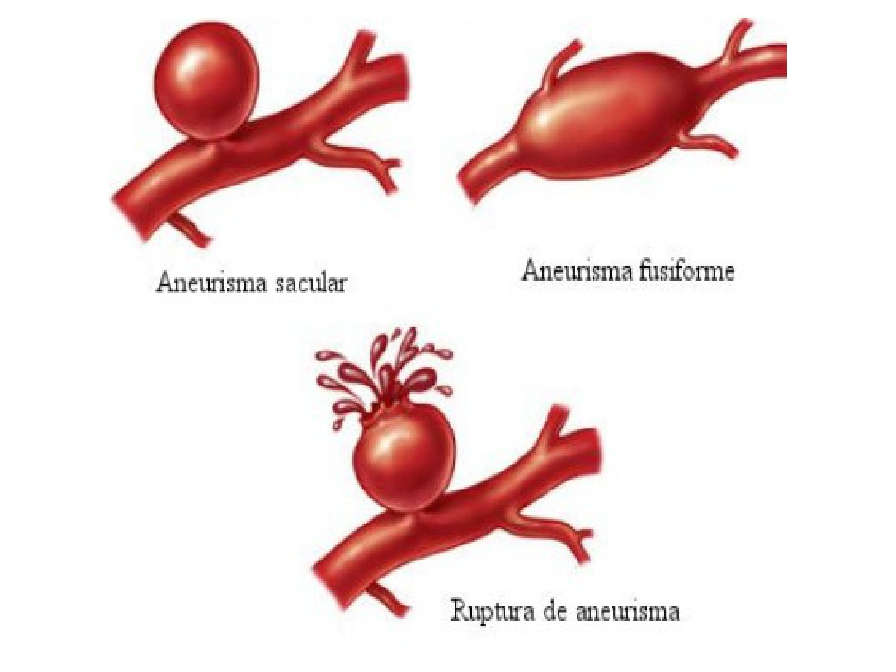
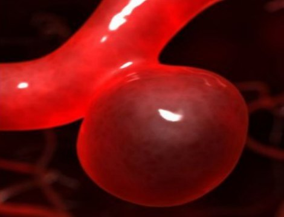
🎯 O medo de todo aneurisma: romper a qualquer momento
"Quem está dilatada, dilacerada, é a camada de resistência." Por isso, descobrir um aneurisma é descobrir uma estrutura que pode romper a qualquer momento — e a parede não tem reserva.
2 · Como o aneurisma se apresenta: efeito compressivo e a cefaleia
- A descoberta quase sempre acontece pelos efeitos compressivos que o aneurisma provoca nas estruturas ao redor.
- Aneurisma cerebral: alto índice de descoberta por dor de cabeça — muitas vezes tratada por muito tempo como enxaqueca. Conforme a área e a gravidade da compressão, o paciente pode ter convulsão. A bolsa comprime células que conduzem impulso nervoso e pode provocar isquemia — vai haver sinalização neurológica.
- Sinais do slide: o aneurisma pode ser assintomático, aparecer como massa abdominal pulsátil ou dar dores difusas (lombar, abdominal…).
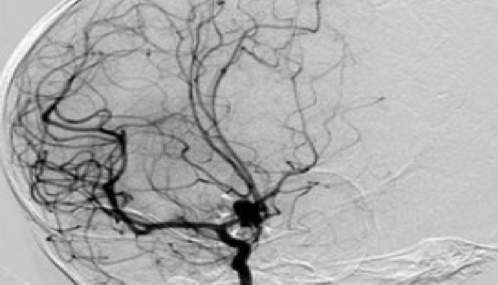
🎯 "Começa pela anatomia": imagem é a ferramenta de exclusão
A professora foi enfática: paciente que diz "sinto uma dor de cabeça muito forte, que me perturba" precisa de ferramenta de exclusão — e a ferramenta é a tomografia. Rotular enxaqueca sem investigação ("toda vez que doer, você toma isso") é como "o povo morre". Enxaqueca é convívio crônico; o aneurisma não perdoa. Se a anatomia for negativa, aí sim se supõem as outras causas.
🩺 O caso dos 21 anos
Contado em aula: jovem de 21 anos, sem fatores de risco, com "crises de enxaqueca" repetidas. Numa crise fortíssima, foi ao pronto-socorro, fez tomografia — aneurisma, provavelmente congênito. Operou e a dor parou. Se arrastasse, poderia ter rompido, feito AVC, choque ou crise convulsiva: "um diagnóstico muito mal feito".
3 · Trombo no aneurisma: linhas de Zahn e tromboembolismo
Dentro da bolsa, o sangue que vinha pela artéria de calibre preservado "cai" no saco e não acha a saída: fica turbilhonando. Esse turbilhonamento lesiona o endotélio — às vezes já doente por aterosclerose — e dispara a sequência:
Do turbilhonamento ao trombo
- 1Turbilhonamento — o fluxo perde a organização dentro do saco.
- 2Lesão endotelial — exposição de fator tecidual.
- 3Plaquetas + rede de fibrina — forma-se um trombo dentro do aneurisma.
- 4Obstrução / isquemia — o trombo pode ocluir o vaso no lugar ou ser empurrado adiante (embolia).
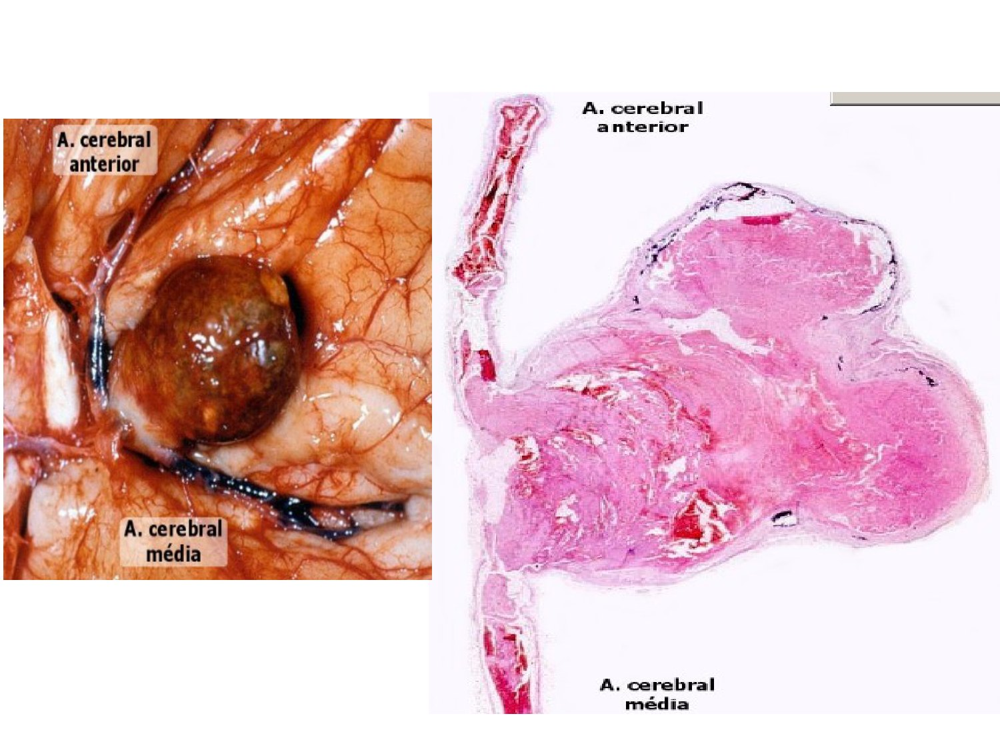
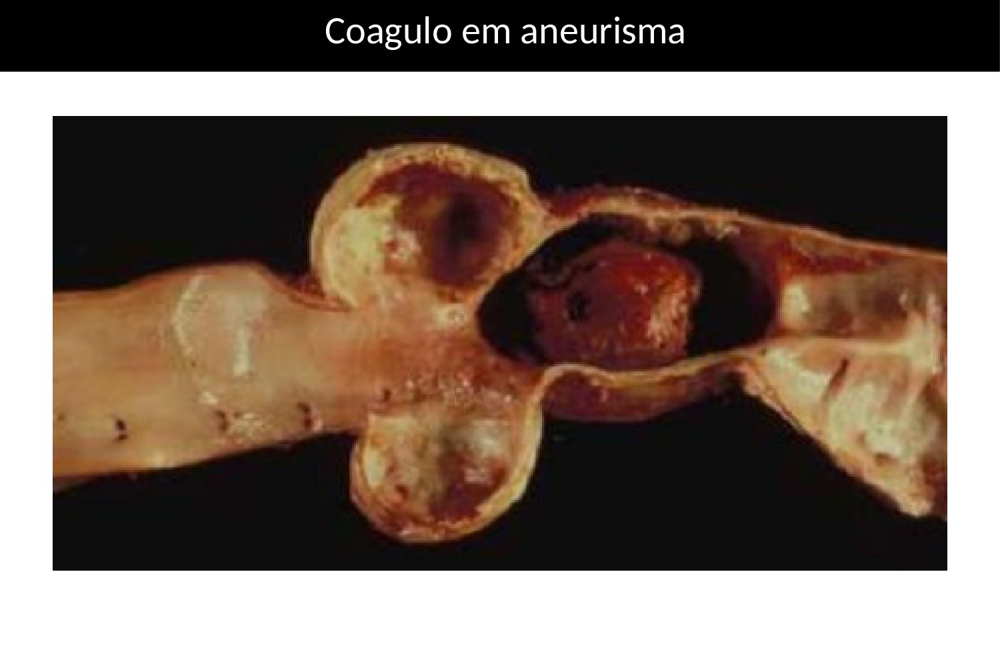
⚠️ Duas mortes possíveis no mesmo aneurisma
Romper → hemorragia (AVC hemorrágico no cérebro, choque na aorta). Trombosar → isquemia local ou embolia à distância. A lesão é construída ao longo de meses — "provavelmente teria sido posto stent aí" se o diagnóstico não tivesse sido arrastado.
4 · Aneurisma dissecante: a parede que desfia
- Outra possibilidade além da compressão: a parede dilacerar — a área do bolsão vai desfiando progressivamente.
- Há aneurisma com parede fina, mas única; e há aneurisma com parede fina dividida em duas, com sangue circulando entre elas (falso trajeto da dissecção).
- Se o aneurisma já é grave, o dissecado está "por um fio": a ruptura fica ainda mais próxima. As opções são cirurgia, com todo o risco cirúrgico, ou aguardar — "porque ele vai estourar".
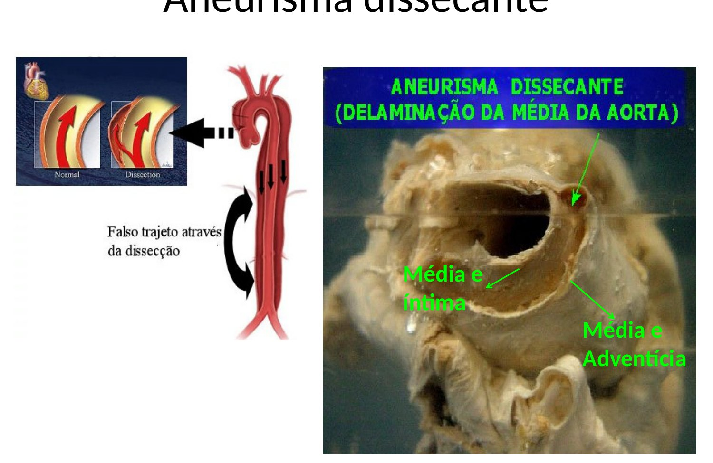
5 · Pseudoaneurisma, trauma e fraturas
Pseudoaneurisma (o "falso" aneurisma)
- Etiologia: pós-procedimento vascular, cirúrgico ou traumático — artérias femoral, braquial e radial.
- Definição: hematoma pulsátil, comunicante com a artéria por um pedículo. As paredes não são do vaso: são do tecido ao redor da artéria.
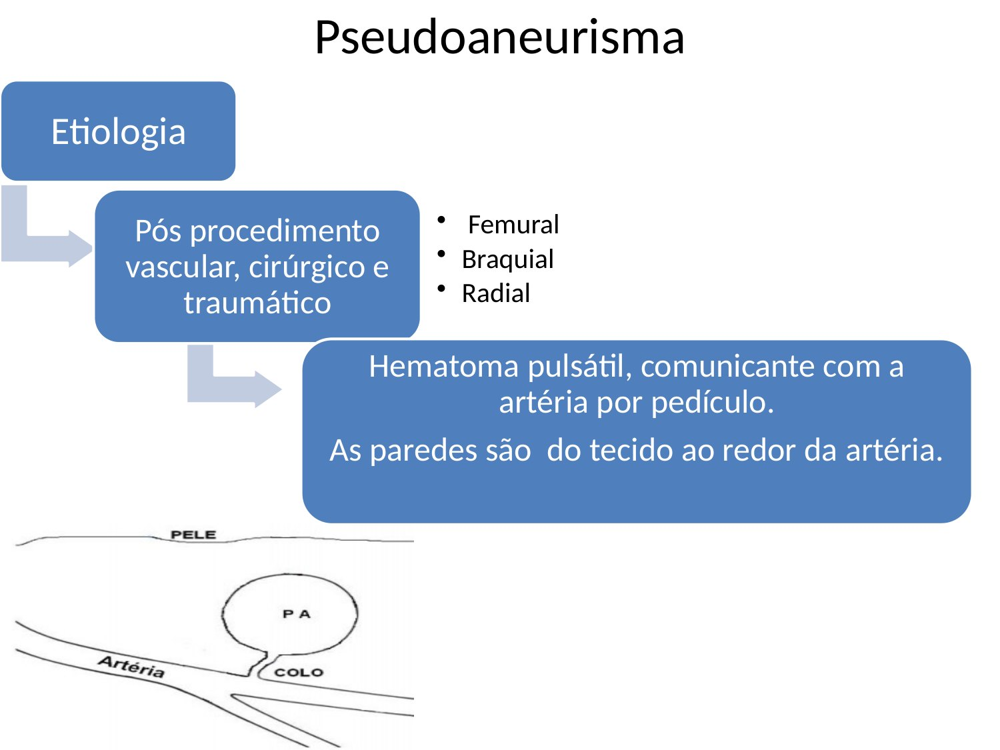
Por que a punção arterial é perigosa
- Artéria tem pressão elevada e trajeto profundo: estancar o sangramento "não é um esforço qualquer". A força pressórica arranca o tampão hemostático que as plaquetas fazem — por isso existem dispositivos de compressão (tipo "morsa"/torniquete) que ficam comprimindo a femoral. "Aperta 5 segundos e vai embora" não funciona em artéria.
- Sem tamponamento adequado: sangra ao redor do vaso → as células extravasadas necrosam → a necrose estimula resposta inflamatória → a inflamação danifica as camadas do vaso → aneurisma.
- Por isso: se for possível pegar uma veia, não se pega artéria. Antes de puncionar, pergunte-se: estou preparado? Tenho estrutura para fazer a compressão devida?
- Conduta numa lesão recente: não se opera de imediato — acompanha-se; primeiro a fase inflamatória precisa se resolver, depois se avaliam as consequências.
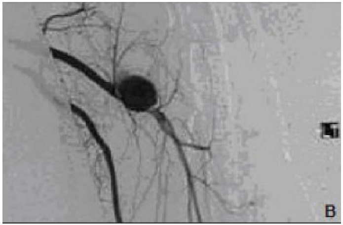
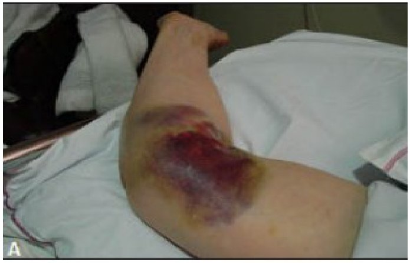
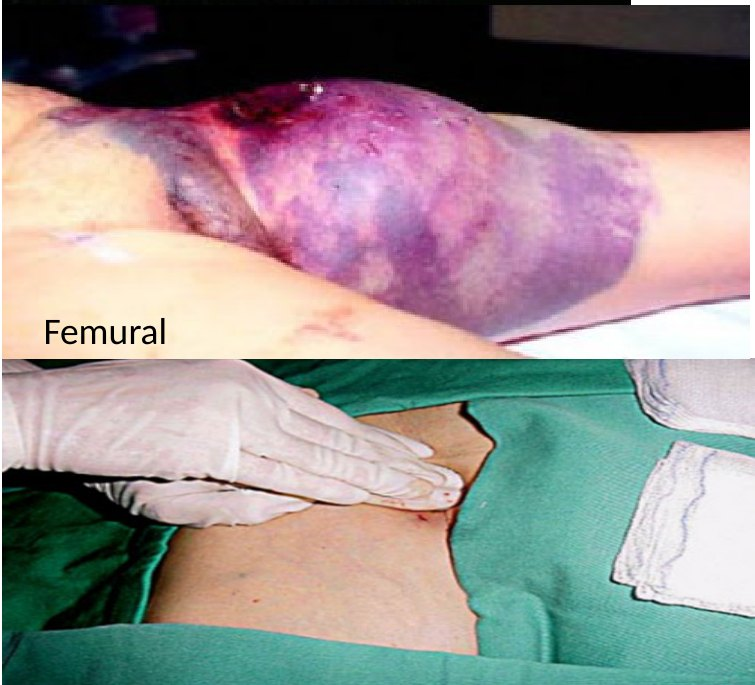
Trauma e fraturas
- Trauma: pancadas sobre vasos causam lesão mecânica da parede — altos índices em acidentes automobilísticos e de moto, especialmente sem proteção (cabeça na guia, no asfalto). Movimentos bruscos também lesam.
- Fraturas de ossos que têm vasos de grande calibre passando paralelos: úmero → artéria braquial; clavícula → artéria subclávia (ex.: dividida de ombro no futebol, clavícula quebra para baixo → aneurisma de subclávia).
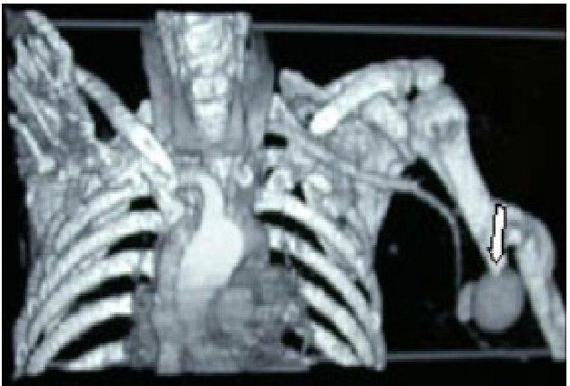
🎯 Raio X não vê partes moles — lembre da anatomia
O diagnóstico de fratura muitas vezes é feito só com raio X, que não mostra tecidos moles; às vezes se faz tração/reposição "sem nem saber como está o tecido mole". Quem não lembra que a subclávia corre junto à clavícula e a braquial junto ao úmero não se preocupa — e é assim que o aneurisma passa despercebido.
6 · Patogênese: os 4 caminhos que destroem a média
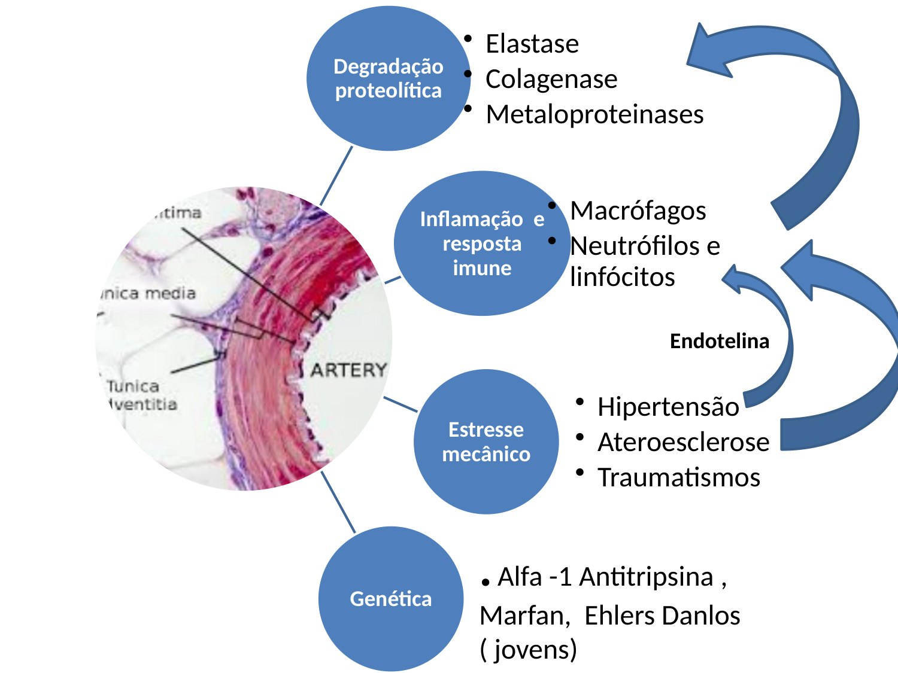
Os 4 eixos (eles se alimentam entre si)
- 1Estresse mecânico — tudo que estressa mecanicamente o vaso: hipertensão; aterosclerose (além de inflamatória-cicatricial, ocupa espaço e obstrui a luz — por isso entra como fator mecânico); traumatismos (punção, pancada).
- 2Inflamação — os três eventos acima arrancam endotélio e inflamam. A inflamação é justificada, mas perigosa: vaza enzimas e radicais livres.
- 3Degradação proteolítica — elastases, colagenases, metaloproteinases dirigidas contra o tecido conjuntivo da média.
- 4Genética — mutações de genes das proteínas do conjuntivo (Marfan, Ehlers-Danlos, em jovens) e deficiência de alfa-1-antitripsina.
Alfa-1-antitripsina: o fígado como protetor da parede
- O fígado fabrica alfa-1-antitripsina, uma antiprotease: neutraliza as proteases que a inflamação libera. Como a inflamação é um evento constante, quem tem fígado saudável e genética normal se protege desse dano.
- É fator de risco não ter síntese normal — por doença genética ou por doença hepática. A professora lembrou que a esteatose é muito prevalente (citou cerca de 90% da população): sobrepeso, escolhas alimentares e álcool tiram a capacidade hepática plena — não zera a produção, mas talvez não se produza o volume devido.
- Daí obesidade, diabetes e tudo que adoece o fígado continuarem sendo "um problema com o corpo, ponto".
🔗 Conexão
A alfa-1-antitripsina volta nas aulas de pulmão; as mutações de proteínas do conjuntivo foram vistas na aula anterior. É a mesma lógica: protease sem antiprotease destrói conjuntivo.
7 · Aneurisma aterosclerótico: a causa mais comum
| Característica | Aneurisma aterosclerótico (slide) |
|---|---|
| Frequência | Causa mais comum de aneurisma |
| Onde | Aorta abdominal e ilíaca |
| Quem | Idosos, acima de 65 anos (depósito progressivo de LDL ao longo da vida) |
| Mecanismo | Desequilíbrio entre proteases e antiproteases = destruição do tecido conjuntivo da parede; liberação de metaloproteinases (elastases, colagenases); fragmentação das fibras elásticas |
| Morte | Por ruptura |
- O cenário está mudando: já se vê criança com LDL alto — a professora questionou se será surpresa um aneurisma aterosclerótico aos 30 anos, daqui a alguns anos.
- Dislipidemia familiar: eleva o colesterol sem mecanismo evidente — não são pessoas com sobrepeso ou má alimentação, e não respondem às estatinas. É minoria.
8 · Aneurismas da aorta: imagem, exame físico e necropsia
Aorta torácica na imagem
- No raio X é natural ver o botão aórtico — uma delicada curvatura do arco. No aneurisma, não é um botão: é a aorta inteira alterada.
- O raio X levanta a suspeita, mas não fecha o diagnóstico: vai-se para a tomografia, que mostra e mede o diâmetro da aorta.
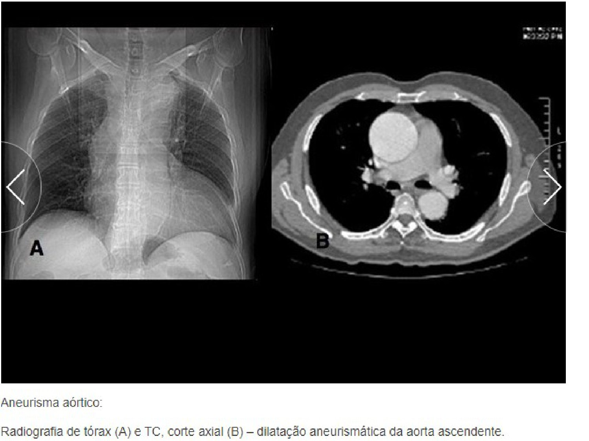
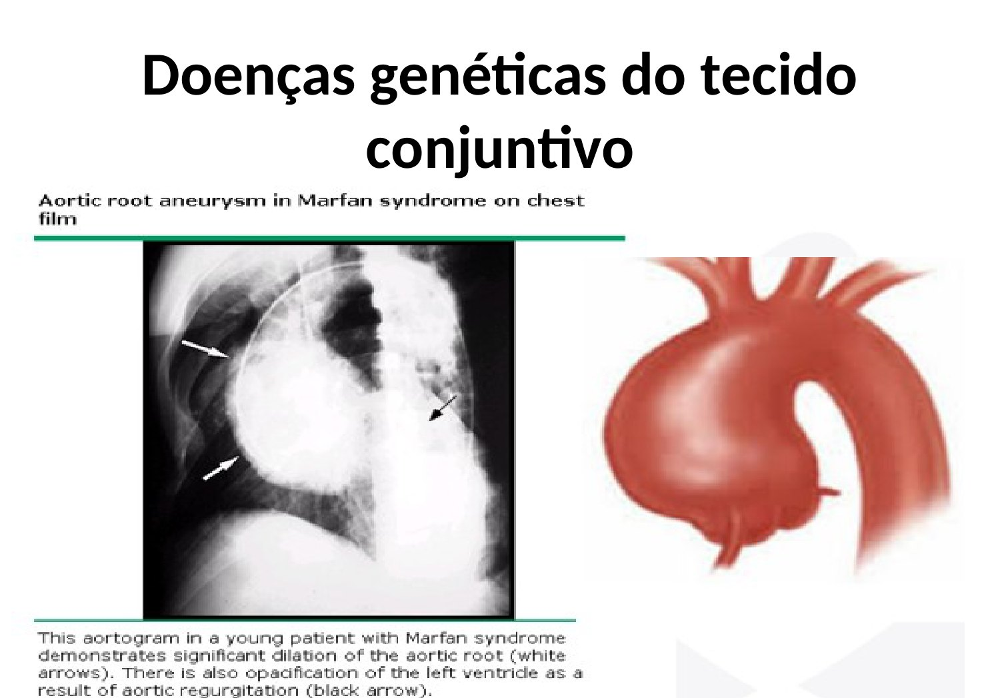
Aorta abdominal: dá para palpar
- Quando a anatomia permite, o aneurisma é percebido no exame clínico: entre os arcos costais e a crista ilíaca de uma pessoa magra, uma "bolota" que pulsa — massa abdominal pulsátil = aneurisma de aorta abdominal.
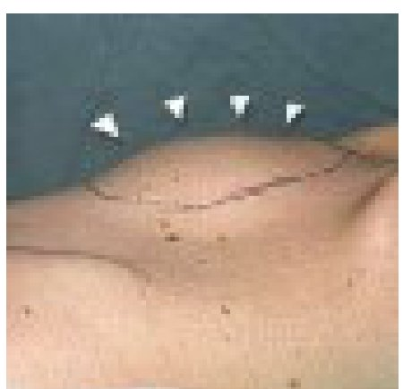
🩺 O "apagão" em casa
Caso de necropsia mostrado em aula: homem que estava bem em casa, teve um apagão repentino, caiu e chegou morto à emergência. Com essa história, pensa-se em lesão cardiovascular — começou-se pelo coração: não era infarto. Então se notou o empalidecimento das alças intestinais; ao levantá-las, sangue espalhado: ruptura de aneurisma da aorta abdominal. Daí a importância dos exames periódicos.
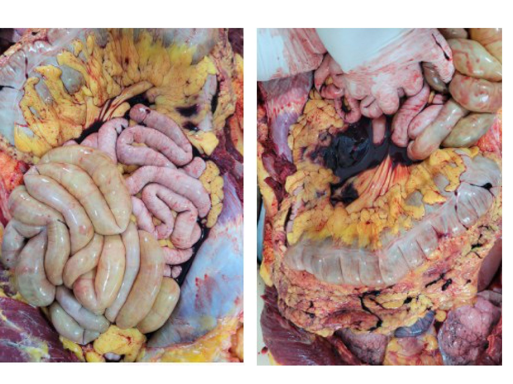
9 · Consequências e tratamento endovascular
| Consequência (slide) | O que significa |
|---|---|
| Dilatação progressiva | a parede sem média continua cedendo |
| Dilatação local mais acentuada | forma o aneurisma sacular |
| Compressão, deslocamento e destruição de estruturas vizinhas | o efeito compressivo (cefaleia, convulsão, dor) |
| Danos à parede | dilaceração, dissecção |
| Sacos preenchidos com trombos | turbilhonamento → lesão endotelial → exposição de fator tecidual |
| Ruptura, hemorragia, choque | o desfecho temido |
| Colonização por microrganismos | fluxo turbulento facilita que micro-organismos do sangue parem e colonizem; risco de colonização da prótese |
- Infecção também pode participar da origem: a professora comentou um artigo com aneurisma fatal em paciente sem clínica, com herpes encontrado na parede arterial — os autores acreditam que a infecção levou ao aneurisma. É uma hipótese interessante, não regra.
Endoprótese: o "guarda-chuva" fechado
- Aneurismas da aorta abdominal perto da bifurcação ilíaca ou logo abaixo das artérias renais são muito sérios: paredes muito frágeis.
- A opção é entrar com cateter levando o stent fechado (como um guarda-chuva) e o cirurgião escolher o melhor lugar para ele armar. Mesmo com treino, o stent pode armar em ângulo e lesionar a parede — "e a gente não tem outra parede para pôr lá".
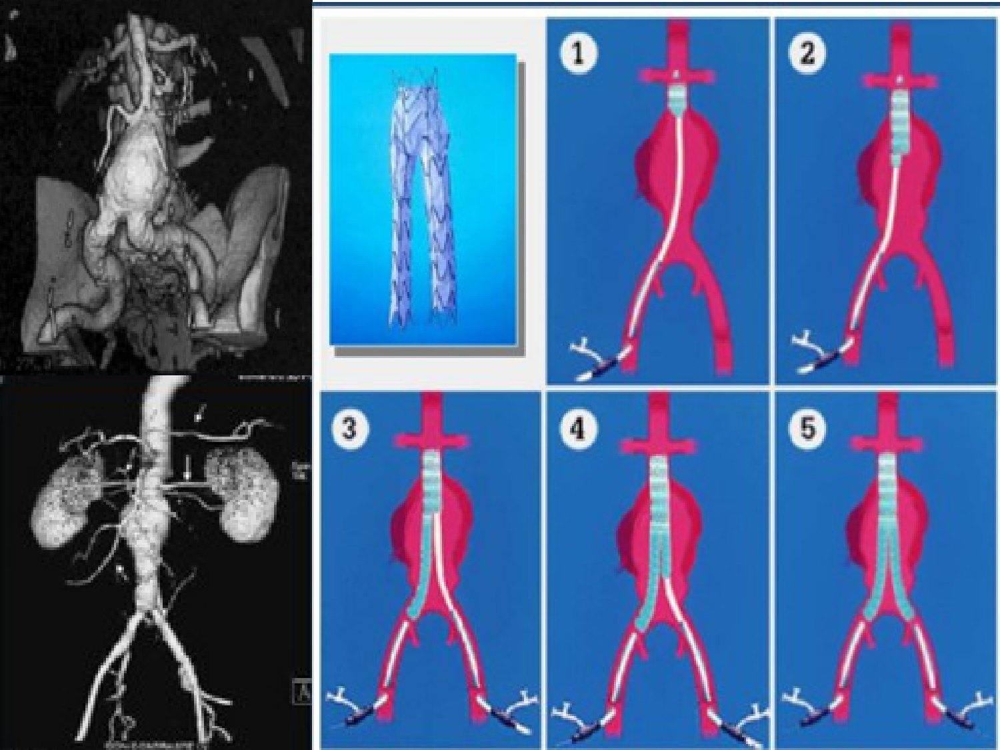
🩺 Abdome agudo a esclarecer: a "bola" na artéria esplênica
Paciente no PS com dor abdominal aguda. Pensou-se em alça intestinal, torção, ureter… a imagem mostrou uma "bola" conectada à artéria esplênica: aneurisma. A decisão foi perder o vaso em vez de tentar recuperá-lo — não há stent para essa dimensão, e uma prótese exigiria cirurgia eletiva, que não era possível naquele contexto.
✅ Resumo rápido da aula
- Conceito: dilatação vascular/cardíaca por perda de resistência; lesão da camada média (camada de resistência); maioria arterial (pressão); alongamento, tortuosidade, dilatação. Sacular (saco) × fusiforme (toda a circunferência).
- Clínica: descoberto pelo efeito compressivo; cerebral → cefaleia (confundida com enxaqueca), convulsão; imagem (TC) = ferramenta de exclusão. Assintomático, massa pulsátil, dor lombar/abdominal.
- Trombo: turbilhonamento → lesão endotelial → fator tecidual → plaquetas/fibrina; linhas de Zahn = trombo em vida; AVC isquêmico; tromboembolismo aneurismático.
- Dissecante: parede dividida em duas com sangue entre elas → ruptura mais próxima.
- Pseudoaneurisma: pós-procedimento/trauma (femoral, braquial, radial); hematoma pulsátil com pedículo; parede = tecido ao redor. Compressão prolongada; preferir veia; conduta inicial = acompanhar. Fraturas: clavícula→subclávia, úmero→braquial; RX não vê partes moles.
- Patogênese: mecânico (HAS, aterosclerose, trauma) + inflamação + proteólise (elastase, colagenase, MMP) + genética (alfa-1-antitripsina, Marfan, Ehlers-Danlos em jovens). Fígado doente = menos antiprotease.
- Aterosclerótico: o mais comum; aorta abdominal e ilíaca; acima de 65 anos; fragmentação elástica; morte por ruptura.
- Consequências: dilatação progressiva, compressão, trombo, ruptura/hemorragia/choque, colonização por microrganismos (e da prótese). Endoprótese: stent fechado, escolher ancoragem, risco de lesar a parede.
🫀 Resumão Pré-Prova — Aneurismas
Revisão da véspera · Anato Pato II · Aula 08 · só o que foi dado em aula
- Aneurisma = dilatação vascular (ou cardíaca) por perda de resistência da parede.
- Camada culpada: MÉDIA (músculo liso + conjuntivo) — a camada de resistência. Dilacerada → não segura pressão.
- Maioria arterial (pressão). Resposta do vaso: alongamento, tortuosidade, dilatação da luz.
- Medo: romper a qualquer momento.
| Tipo | Parede | Marca |
|---|---|---|
| Sacular | do vaso, média lesada | bolsa de um lado ("bolinha"); dilatação local mais acentuada |
| Fusiforme | do vaso, média lesada | dilatação de toda a circunferência, alongada |
| Dissecante | dividida em duas lâminas | sangue entre as lâminas (falso trajeto) → ruptura mais próxima |
| Pseudoaneurisma | tecido ao redor da artéria | hematoma pulsátil ligado à artéria por pedículo; pós-procedimento/trauma (femoral, braquial, radial) |
- Descoberta quase sempre pelo efeito compressivo nas estruturas vizinhas.
- Cerebral: cefaleia (rotulada como enxaqueca), convulsão, isquemia. 🎯 TC = ferramenta de exclusão; "começa pela anatomia".
- Sinais: assintomático · massa abdominal pulsátil (entre arcos costais e crista ilíaca, em magro) · dor lombar/abdominal difusa.
- RX tórax: botão aórtico ≠ aorta inteira alterada; RX sugere, TC confirma e mede.
- Fraturas: clavícula → subclávia · úmero → braquial. RX não vê partes moles.
- Turbilhonamento → lesão endotelial → exposição de fator tecidual → plaquetas + fibrina → trombo.
- Linhas de Zahn = trombo formado em vida → AVC isquêmico (podia ter sido hemorrágico).
- Tromboembolismo aneurismático: a PA desloca o trombo do saco → isquemia adiante (morte aguda conforme território).
| Eixo | Exemplos da aula |
|---|---|
| Estresse mecânico | hipertensão · aterosclerose (ocupa espaço, obstrui) · traumatismos (punção, pancada) |
| Inflamação / imunidade | macrófagos, neutrófilos, linfócitos; vazam enzimas e radicais livres |
| Degradação proteolítica | elastase · colagenase · metaloproteinases → conjuntivo da média |
| Genética | deficiência de alfa-1-antitripsina · Marfan · Ehlers-Danlos (jovens) |
- Alfa-1-antitripsina = antiprotease feita pelo fígado. Menos síntese (genética ou doença hepática, ex.: esteatose) → proteases livres → média destruída.
- Causa mais comum. Aorta abdominal e ilíaca. Acima de 65 anos.
- Desequilíbrio proteases × antiproteases, liberação de metaloproteinases, fragmentação das fibras elásticas.
- Mata por ruptura. Tendência: LDL alto já em crianças; dislipidemia familiar não responde a estatina (minoria).
- Dilatação progressiva · compressão/deslocamento/destruição de vizinhas · danos à parede · saco com trombos · ruptura, hemorragia, choque · colonização por microrganismos (risco de colonizar a prótese).
- Necropsia: apagão súbito, coração sem infarto, alças pálidas + sangue → ruptura de AAA.
- Endoprótese: stent entra fechado por cateter; escolher o local de ancoragem; pode lesar parede frágil.
- Pseudoaneurisma recente pós-punção: acompanhar, esperar a fase inflamatória resolver.
- Aneurisma de artéria esplênica em abdome agudo: preferiu-se sacrificar o vaso (sem stent para a dimensão).
- Aneurisma verdadeiro (parede do vaso) ≠ pseudoaneurisma (parede = tecido perivascular, pedículo).
- Sacular (um lado) ≠ fusiforme (toda a circunferência).
- Dissecante (sangue entre lâminas da parede) ≠ trombo no saco (sangue coagulado na luz, linhas de Zahn).
- Ruptura → hemorragia/choque ≠ trombose/embolia → isquemia.
- Botão aórtico (curvatura normal do arco) ≠ aorta inteira dilatada.
- Alfa-1-antitripsina é ANTIprotease (protege) ≠ elastase/colagenase (destroem).
- Aterosclerótico (idoso, aorta abdominal) ≠ Marfan/Ehlers-Danlos (jovem, raiz da aorta).
Banco de Questões — Aneurismas
Anato Pato II · Aula 08 · estilo ENADE/residência.